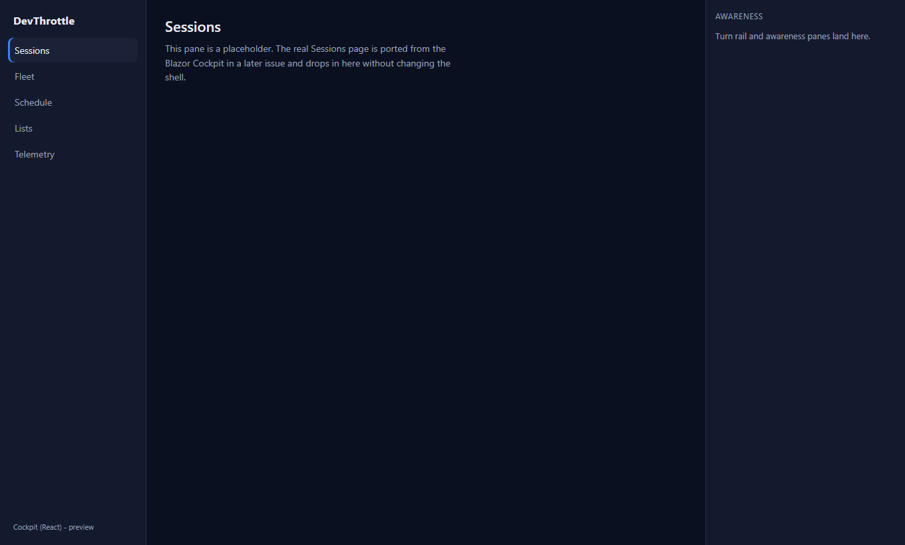
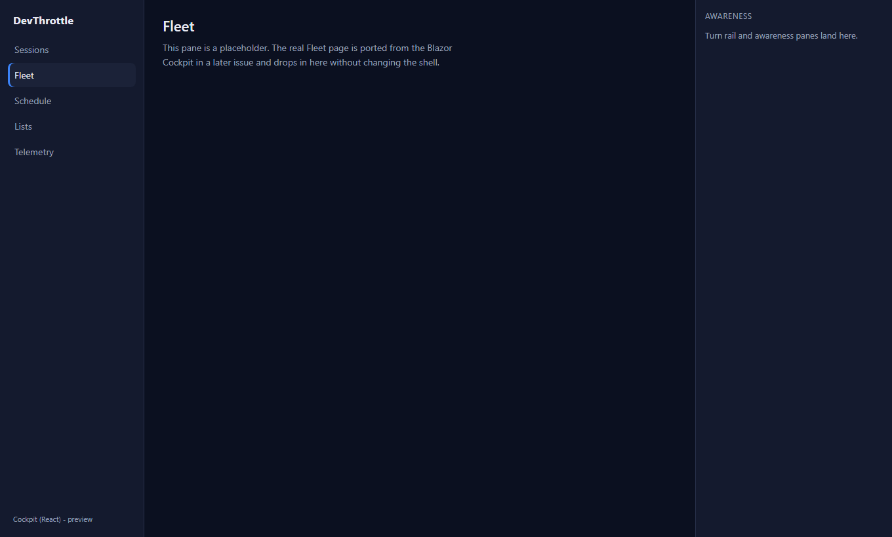

Cockpit React: scaffold apps/cockpit React single-page application served by the Gateway (coexists with Blazor)
Part of epic #967 (rebuild the Cockpit in React, retire Blazor Server). Builds on #968 (npm workspace + packages/client-core).
apps/cockpit - a Vite + React + TypeScript single-page app depending on @devthrottle/client-core. It renders a three-region desktop layout frame (left navigation rail, main pane, right awareness rail) and routes between placeholder panes. No feature pages - those are their own issues. Served base /c/; router basename "/c". It calls ensureGatewayCookie() from client-core at startup, so it is on the shared client contract from day one.src/CcDirector.Gateway/Cockpit/CockpitReactApp.cs - serves /c as static files with a single-page-app index.html fallback and path-traversal-safe file resolution, the direct desktop analog of how /m (mobile) is served. Mapped in GatewayHost BEFORE the fallback Blazor Cockpit proxy, so /c is owned by React while every other path still falls through to Blazor unchanged.BuildCockpitApp MSBuild target on CcDirector.Gateway.csproj - same shape and RELEASE-ONLY gate as BuildMobileApp: builds the app through the workspace and stages dist/** into wwwroot/c. A routine Debug dotnet build does not run npm.| Criterion | How it is met | Proof |
|---|---|---|
| Navigating to the Cockpit path loads the React shell served by the Gateway, same-origin, with no absolute URLs (lint passes) | Gateway serves /c via CockpitReactApp; Vite base:"/c/" makes every asset root-relative; startup uses only root-relative client-core calls |
ESLint Gateway-only-ingress rule PASS (whole workspace); integration test Root_of_c_serves_the_react_shell PASS against the real GatewayHost; built index.html references /c/assets/... only |
| The shell renders the empty layout frame and routes between placeholder panes | Three-region AppShell + react-router-dom routes (/, /fleet, /schedule, /lists, /telemetry) |
Screenshots below: layout frame renders; clicking "Fleet" navigates to /c/fleet and the pane + active nav change. Test Deep_client_route_falls_back_to_the_shell_for_the_router PASS (SPA fallback) |
| The Blazor Cockpit still serves its own paths unchanged (side-by-side coexistence) | CockpitReactApp.Map is placed before CockpitProxy.Map (the fallback catch-all); only /c is claimed, everything else flows to Blazor |
Test Unknown_path_still_falls_through_to_the_blazor_cockpit PASS: a non-/c path answers the Blazor fallback (interstitial via the dead proxy port), never the React shell |
| A Gateway restart shows the interstitial and the shell recovers on its own | Unchanged existing behavior: the Blazor fallback proxy serves the auto-refreshing "Cockpit starting..." interstitial while the child is down; the React static shell has no server dependency and simply serves once the host is up | The interstitial path is exercised by the coexistence test (dead proxy port returns the 2s auto-refresh "Cockpit starting" page); no code in this issue changes that path |
Tests in src/CcDirector.Gateway.Tests/CockpitReactAppServingTests.cs start an actual GatewayHost (the same wiring the product runs) with a dead Blazor Cockpit proxy port, then drive it over HTTP.
| Test | Asserts | Result |
|---|---|---|
| Root_of_c_serves_the_react_shell | GET /c -> 200 text/html, the shell body | PASS |
| Deep_client_route_falls_back_to_the_shell_for_the_router | GET /c/fleet -> 200, same shell (SPA fallback) | PASS |
| Hashed_asset_is_served_immutably | GET /c/assets/index-abc123.js -> 200, immutable cache | PASS |
| Unknown_path_still_falls_through_to_the_blazor_cockpit | a non-/c path -> Blazor fallback interstitial (coexistence) | PASS |
Full Gateway test suite: 1235 passed, 0 failed. Full solution dotnet build cc-director.sln: Build succeeded, 0 warnings, 0 errors. Workspace npm run typecheck and npm run lint: clean.
dotnet build src/CcDirector.Gateway/CcDirector.Gateway.csproj -p:BuildCockpit=true populated wwwroot/c with index.html + assets/ and flowed them to the Gateway bin output - the release pipeline stages exactly the files the Gateway serves.
The byte-identical built dist/ served at /c/, rendered in Chromium (Playwright). Left rail navigation + main pane + right awareness rail.
Default route /c/ - Sessions pane:

After clicking "Fleet" - route is now /c/fleet, pane and active nav updated:

Additive: one new static-asset serving surface at /c and one Gateway route group, mapped before the existing fallback. No security-posture change - no new secrets, same-origin only, the Gateway-only-ingress lint rule is enforced and passes, and index.html carries no credential. This repo has no docs/cencon/architecture_manifest.yaml or security_profile.yaml, so there is nothing to drift.
I believe this is finished. Every acceptance criterion is met and proven live against the real Gateway, the full build and test suite are clean, and the Blazor Cockpit coexists unchanged.